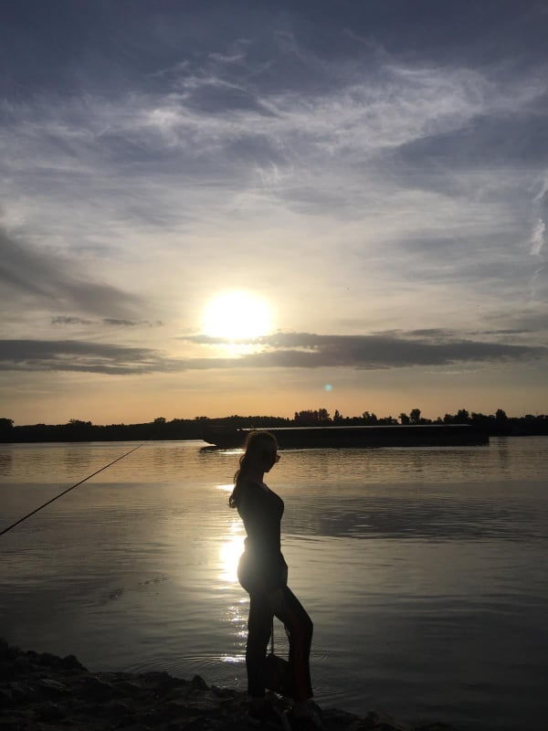
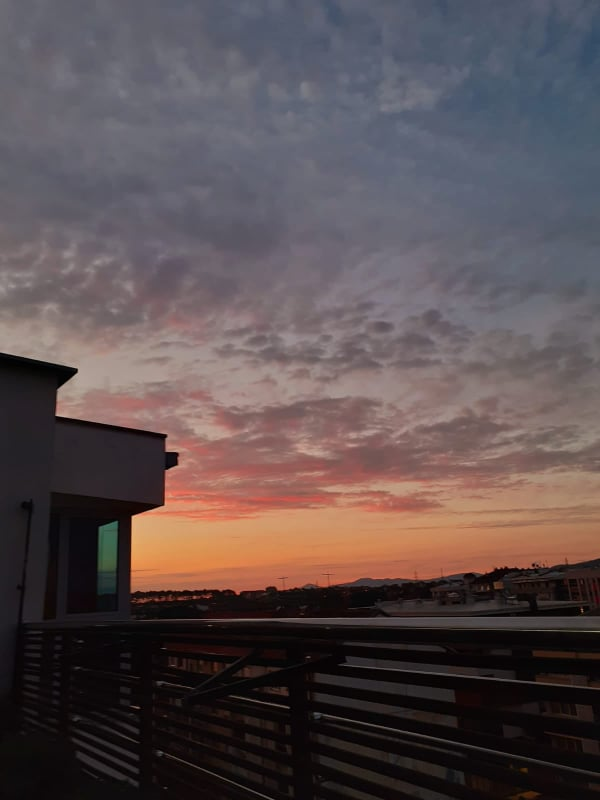
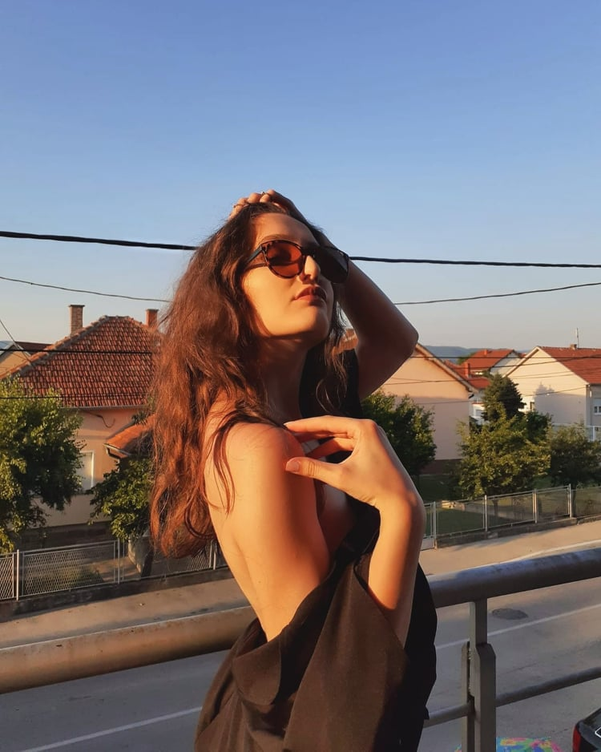
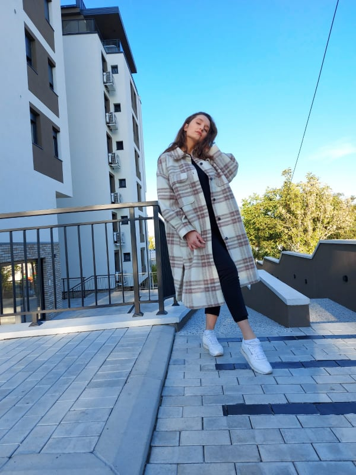
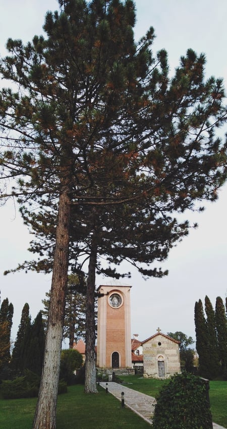
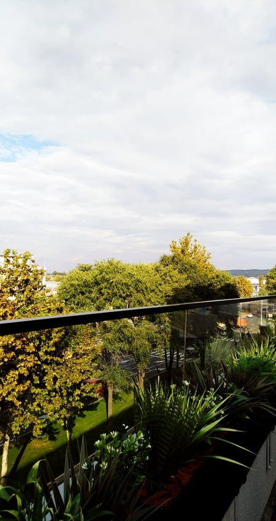
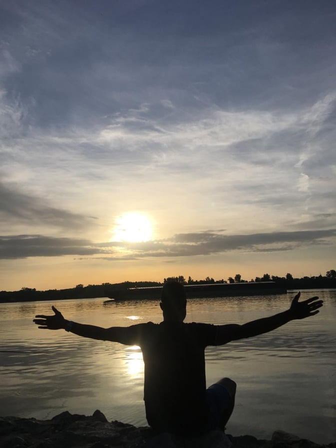
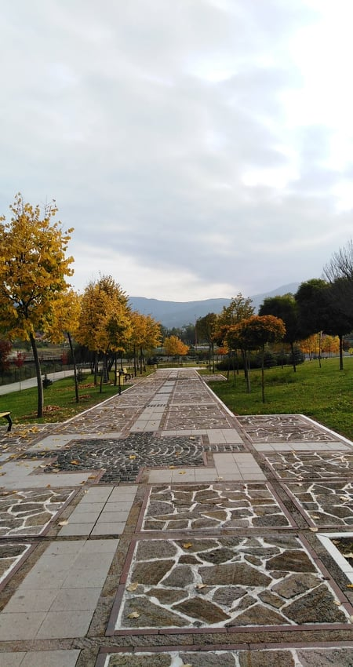
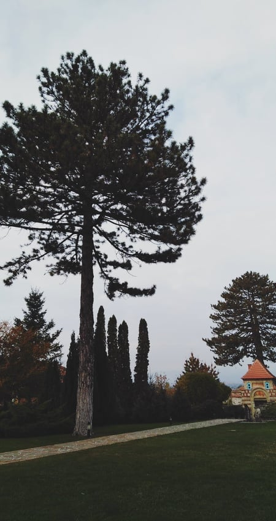
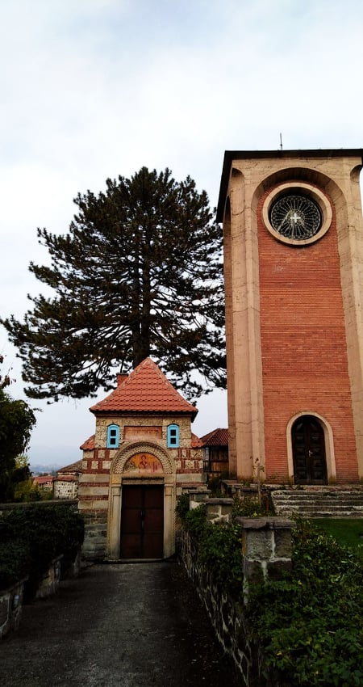

Na sledecem linku mozete doci do mog instagram profila.
Moj instagram profilDobrodošli na Brankin Website!
Lista završenih kurseva:
- HTML
- CSS
- Java Script
- PHP
- Angular 7
- Android Programiranje
- C programski jezik
- Java programski jezik
- C# programski jezik
- R programski jezik
Svi kursevi su zavrseni u okviru fakulteta na osnovnim studijama.
O projektu
Ovde sam koristila HTML i CSS kako bih vežbala navedene tehnologije. Pratila sam tutorijal sa YouTube-a. CSS je jako zanimljiv i volela bih u budućnosti da se bavim WEB programiranjem. Za sada idem ka tome da postanem front-end developer, ali u budućnosti svakako i full-stack developer zbog predznanja iz razlicitih back-end tehnologija i ličnog interesovanja.
FON
Trenutno sam na studijama Beogradskog univerziteta, Fakultet organizacionih nauka. Završna sam godina na FON-u, apsolvent sa još 2 ispita do završetka osnovnih studija.
Osobine
Neke od mojih najbitnijih osobina svakako jesu:
- Upornost
- Timska nastrojenost
- Empatija
- Strpljenje
- Kreativnost








